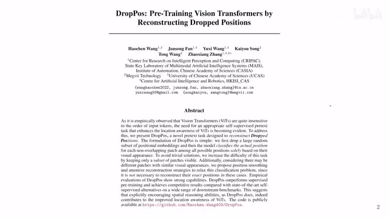
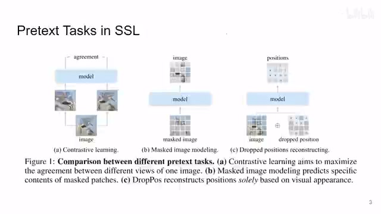
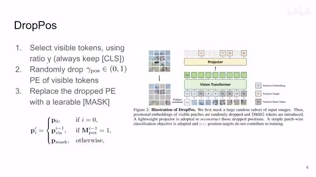
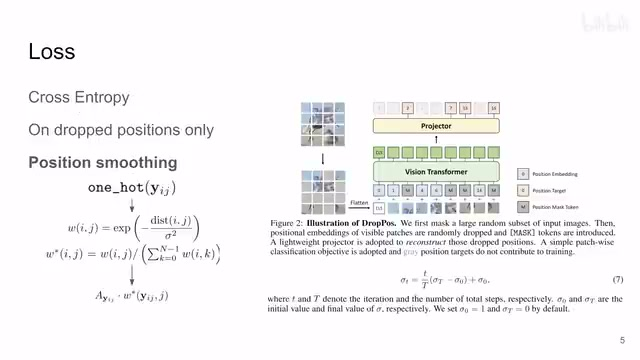
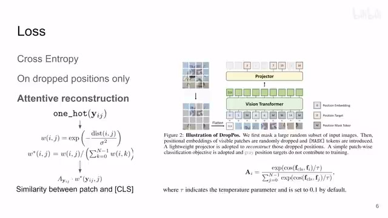
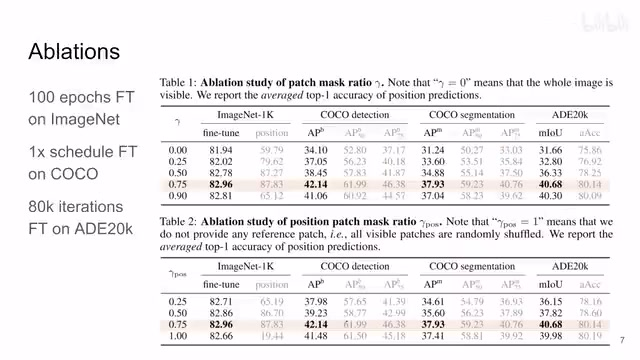
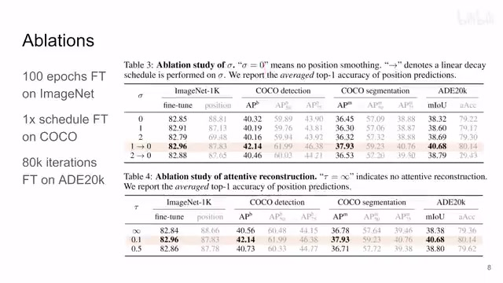
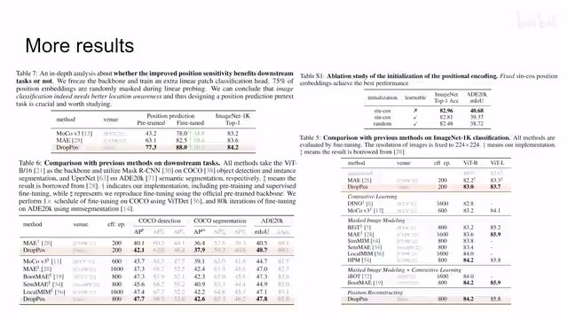

← 返回阅读库 · 原论文目录
论文讲解阅读文档 · 表征学习 · v159
DropPos Pre-Training ViTs by Reconstructing Dropped Positions[2309.03576]
视频时长 00:06:21；讲解文字 2,996 字符；提取讲解画面 9 张。按视频原顺序阅读，每段文字保留时间戳。
文字来自整段视频的自动语音转写，按自然停顿分段，并与 PPT / 论文页面 / 演示画面对齐。未将讲解压缩为摘要；术语、数字和口述公式请结合画面及原论文核对。 阅读稿已校正规范部分明确术语误识别；原始逐字稿和每处修改记录另行保留。
讲解画面为源视频截图（640×360），不是可编辑 PPT 文件。全片按每秒 2 帧扫描内容变化，逐步展开页保留；连续动画保留代表画面。清晰度受源视频限制。
下载完整资料包 · 含离线 HTML、PDF、Word、全部 PPT 画面和字幕。
原论文与材料
DropPos: Pre-Training Vision Transformers by Reconstructing Dropped Positions · 下载完整 PDF（18 页）
按时间阅读
00:00:00–00:00:24 · 画面 001

00:00:00–00:00:24 · 画面 001大家好,今天我们来快速说一篇论文 DropPos: Pretraining Vision Transformers by Reconstructing Dropped Positions 这篇就是在原来的 MAE 的基础上把原来重建图像像素的这个任务换成了去预测这个 patch 在图像中具体的位置这么一个任务然后经过一些设计然后经过一些设计取得了不错的效果那么我们仔细来看
00:00:24–00:00:57 · 画面 002

00:00:24–00:00:57 · 画面 002首先一个快速的回顾对吧，自监督这一块我们有各种各样的任务，比如说 contrastive learning，同一张图像经过不同的增强之后但是他们的语义信息应该是一致的对吧，这个是 contrastive 这条线，然后呢 MIM 就是 mask 一部分然后去重建被 mask 的部分本文在 MIM 的基础上发展起来，但是它要做的任务并不是重建像素本身，而是去预测每一个 Patch 它具体的位置，而被预测的这些 Patch 它一开始的 Positional Embedding 是被丢掉的，这个是本文的思路，那么首先跟 MAE 一样，你要用一个很高的比例去去掉大部分的 Patch，你看到从这里到这里，那么在本文的设计里面，我们的 Classification Token 是一直保留的
00:00:57–00:01:50 · 画面 003

00:00:57–00:01:50 · 画面 003因为它在后面我们要用到，那么然后你正常做 MAE 的时候，你就要给现在剩下的所有的 patch 根据它们对应的位置去给它加 positional embedding 了，那么这里就是本文的核心，我用另一个比例去 drop 掉这些 positional embedding，那我虽然把它 drop 掉了，但是我并不是直接什么都不加，而是我去用一个 learnable 的一个 mask，这个 mask token 就是替代这个被 drop 掉的 positional embedding，它的作用
然后呢把这些带这个 mask 的 positional embedding 加到这些 token 上送到你的 transformer 里面做训练，那做出来的 feature 过一个非常简单的 projector 你就去预测这些失去 positional embedding 的 patch 它在图像中的位置，那这就是一个多分类的问题嘛，那么既然做到多分类 loss 呢就是 cross entropy，那么这里作者的实践跟 MAE 也是一样的，就是我们只是去预测这些 positional embedding 被 mask 掉的这些 token
00:01:50–00:03:36 · 画面 004

00:01:50–00:03:36 · 画面 004那么这个就是本文的核心的技术流程，但是你在真正实现它的时候还是有很多细节值得你去把握的，首先第一点就是比如说我预测一个 patch，我大概知道它在这一个位置，哪怕我没有准确的预测出它的位置，但是我预测的位置差不多这个时候给的惩罚应该比我完全给出一个比如说离着很远的这么一个 patch 这样的预测，那么这两个情况下给出的 loss 应该是不一样的，所以有这个 positional smoothing你可以看到我们原来的 label 从这个 cross entropy 的 one-hot encoding 那变成了这样一个 smooth 的 labelsmooth 的 distribution，那么这个平滑的过程呢跟你的 ground truth 到你预测值的这个距离有关，你可以看到它做了这样一个平滑，那就相当于你预测的结果跟 ground truth 大差不差的时候我的这个 loss 也是相对比较低的
同时呢这个 Sigma 呢也不是一个定值，它是随着你训练的进行来不断调整的，那么在一开始的时候 Sigma 很高，就是你对这个距离的宽容度很大，一开始嘛模型也没有训练预测的结果差一点也没有什么，那么在随着训练的进行呢你这个 Sigma 不断减少，这也就意味着你对它预测位置的这个要求是越来越高的，那么此外呢还有朋友肯定会说你像比如说这个图里面你说我单纯的给你一块这个天给你一块这个背景那么在另一个位置不也有可能有一个长得跟它很像的这么一个 patch 吗那这个时候你让你的模型去预测以一个这个意义不明的 patch 它所在的位置是不是有些强人所难呢所以针对这种情况作者做了一个额外的设计叫做这个 attentive reconstruction
00:03:36–00:04:45 · 画面 005

00:03:36–00:04:45 · 画面 005本质上就是它用这么一个权重去调节我对每一个 patch 预测结果的精度的期望它用这个矩阵来表示我希望哪个 patch 它的预测的精度高我希望哪个 patch 它预测的精度低这样子我就容忍了一些 patch 它的预测的结果可能不是很好哲学三信里面讲到的容许之心对不对这是值得赞赏的那么我们应该用什么样的标准来决定这些 patch 呢这里作者衡量的是这一个 patch 和 classification token它们两个 token 你经过这个 transformer 出来之后它们的相似程度相似程度越高你对这个 patch 的期望也就越大你就越希望能够准确预测这个 patch 的位置或者换句话来说那些可能出现在图像不同位置中你换个位置也无所谓的这些 token 它本来就跟图像本身的语义关系不大因为你想你放在哪里都可以吗它就很有可能是背景的部分所以通过这样一种设计它就自然形成了一个权重
告诉我们哪些 patch 是重要的哪些 patch 是不重要的那么这个呢就是本文的主要的技术细节下面呢我们来看作者汇报一些结果首先是这个 ablation 那包括了那包括一开始像 MAE 一样的 Mask token 有多少
00:04:45–00:05:03 · 画面 006

00:04:45–00:05:03 · 画面 006然后呢对于这些已经存留下来的这些可见的 token 那么我要 drop 掉多少它的 positional encoding 那结果呢发现两个都是 0.75 取到效果最好然后呢就是这个 sigma 做 label smoothing 还有这个套就是控制你算这个 classification 那个 similarity 它那个 temperature 那么这两个参数呢也是经过 ablation 来决定出来的那么当然肯定相对于过去的结果一些漂亮的数字都在这里
00:05:03–00:05:14 · 画面 007

00:05:03–00:05:14 · 画面 00700:05:14–00:06:21 · 画面 008
00:05:14–00:06:21 · 画面 008我们关注两个比较有意思的小的实验啊一个是来验证对于 patch 位置预测这个任务本身它确实是有用的你看到对吧在这个实验里面把这些方法它的这个 backbone 都定住用一个 linear layer 去看它的对于这个位置预测的准确性然后呢 fine-tune 这个 linear layer 再得到一些结果那当然这里的 fine-tuning 是用标准的这个 cross entropy 做的你看到不同的方法它对位置预测的一个结果很巧的是这些结果跟 ImageNet 它的这个性能是有一定的相关关系的至少趋势上是匹配的这是一个有意思的发现
那么这里还有一个实验就是我们用什么样的方法去初始化这个 position encoding 是一个固定好的 sin cosine 还是一个可学习的无论你是从 sin cosine 开始初始化还是 random 开始初始化那么你发现不动这个 position encoding 是最好的那么当然作者在附录里面还有更多详细的 ablation 感兴趣的朋友非常推荐你到原文查看好的那么以上就是我对这个文章的一个快速的整理那么感谢您的收看再见
00:06:21–00:06:21 · 画面 009

00:06:21–00:06:21 · 画面 009转写与来源说明 · 0 个自动复核提示
保留 16 个原始语音片段，0 个片段触发自动复核提示。提示仅用于定位可能的术语、重复或识别问题，不等于已确认错误。
讲解画面为源视频截图（640×360），不是可编辑 PPT 文件。全片按每秒 2 帧扫描内容变化，逐步展开页保留；连续动画保留代表画面。清晰度受源视频限制。
原视频：paper/合集_2026-10-16_表征学习/[论文简析]DropPos Pre-Training ViTs by Reconstructing Dropped Positions[2309.03576].mp4
SHA-256：8838bd18a2b8b80c1e91b3adbbc1c9b52efce0a843ae2cde089269b0ef61b5fc
全文按视频语音与画面制作。原论文可从上方链接下载；完整资料包保留全文、原始逐字稿、字幕和校对记录。